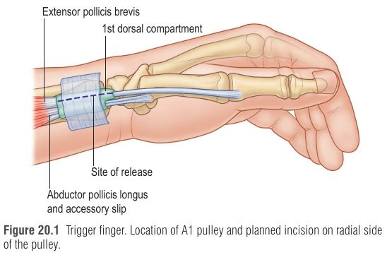
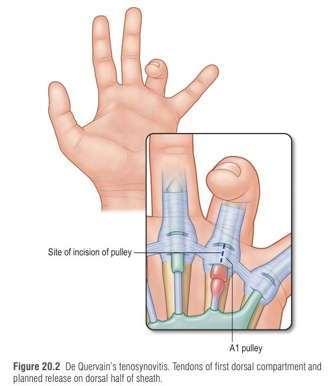

פגיעות גפה עליונה בעבודה הן מהגורמים העיקריים לנכות תעסוקתית והיעדרות. מה שמייחד אותן אינו רק הפתולוגיה – אלא ההקשר: המנתח נדרש לקבוע סיבתיות (causation) ולייחס (או לא) את הבעיה למקום העבודה, לנווט בתוך מערכת פיצויי עובדים (workers' compensation) שיוצרת לחצים חיצוניים, להחליט על חזרה לעבודה ולקבוע נכות צמיתה. היעד: חזרה לתעסוקה משמעותית ואיכות חיים גבוהה, וטיפול לא-ניתוחי כשהוא ידוע כיעיל.
קריטריוני Hill הם מדריך להערכת קשר כ"אולי סיבתי", אבל אף קריטריון או שילוב אינו מוכיח סיבתיות. הראיה הטובה ביותר – ניסוי אקראי שבו החשיפה מחולקת באקראי – כמעט בלתי אפשרי לחשיפות עבודה. לכן תמיד תישאר אי-ודאות, ובמטופל בודד – עוד יותר.
כוח, חזרתיות ורטט הוכרו כגורמי סיכון להפרעות רקמה רכה (טנדיניטיס, CTS, HAVS) – אבל כדאי לראות אותם כתכונות של חשיפה ולא כאבחנה. "תווית פסאודו-אבחנתית" לא תעזור למטופל להחלים; אבחנה ברורה (כמו CTS) מנוהלת לפי הסטנדרט שלה.
| קטגוריה | מאפיין | משמעות ניהולית |
|---|---|---|
| 1 | אבחנה ברורה, טיפול טוב, פרוגנוזה טובה לחזרה לעבודה | מוטיבציה גבוהה, מחלימים וחוזרים – רוב העובדים |
| 2 | אבחנה ברורה, אך הטיפול לא תמיד מחזיר לעבודה המקורית | אפשרות לנכות צמיתה → אותה עבודה / עבודה מותאמת / מעסיק חדש / פרישה; תיאום עם מנהל תיק. להימנע מחשיפה חוזרת לטיפולים פולשניים וניתוחים חוזרים |
| 3 | בעיה פיזית מוגדרת + בעיות לא-רפואיות | כאב לא פרופורציונלי, כעס, "העצמת" תסמינים (תסכול, רצון להישמע, או מודעת); טיפול ביד כ"חלק מבודד" ייכשל |
| 4 | אבחנה לא ברורה | אבחנות מעורפלות, ניתוחים קודמים, קונפליקט עם המעסיק. תפקיד המנתח: אנמנזה, בדיקה, בדיקות מתאימות, המלצה כנה. ניתוח "Hail Mary" = כישלון מאכזב |
תמריצים מעוותים: לחץ להחזיר עובד מוקדם ל"עבודה ביד אחת" (לענות לטלפון, לשבת בחדר) – presenteeism. יש אמונה שחזרה לשגרה מועילה ומפחיתה "התנהגות חולי", אך חזרה מוקדמת מדי עלולה לגרום למטופל להרגיש לכוד, לחשוד במערכת ולאבד שליטה. המיקוד: הטיפול הטוב ביותר לבעיית היד, עם תשומת לב לשאר הדאגות.
| מצב | מנגנון ואבחנה | טיפול |
|---|---|---|
| Lateral epicondylitis | עומס מכני וכיווץ חוזר של המיישרים המשותפים → מיקרו-קרעים, ניוון וטנדינוזיס – ללא דלקת היסטולוגית. כאב לטרלי שמחמיר ביישור שורש כף יד נגד התנגדות. קשור לעבודה כבדה, מקלדת, עבודה מעל הראש, כלים רוטטים, כלים >1 ק"ג | נוטה לחלוף: סד, NSAIDs, פיזיותרפיה, הזרקה או מעקב בלבד (Smidt – החלמה כמעט מלאה במעקב/פיזיו). סטרואיד – הקלה קצרה (<8 שבועות) אך חזרות/תוצאה גרועה ב-6–12 חודשים ודילול הגיד ב-US; PRP – מעבה את הגיד ומגביר וסקולריות, RCTs חיוביים ב-1–2 שנים אך Cochrane 2014: חסרות ראיות. ניתוח (דברידמנט/טנוטומיה של מקור ה-ECRB) – רק אחרי כישלון שמרני |
| Trigger finger | נשים, סוכרת, השמנה, תופרות, מזכירות, בתי מטבחיים. אבחנה קלינית. מטופל ללא triggering פעיל שמייחס לעבודה → סד לילה והערכה חוזרת; triggering + קונטרקטורת PIP → לזהות מראש ולשלב סד ומוביליזציה | הזרקת סטרואיד = קו ראשון (Cochrane); 1–2 הזרקות לפני ניתוח חוסכות עלות. שחרור A1 pulley פתוח (הרדמה מקומית) או מלעורי (במרפאה, זול). זהירות מעצבים דיגיטליים באגודל ובאצבע המורה |
| De Quervain | "הטנדינופתיה התעסוקתית המובהקת" – תאי 1 דורסלי (APL + EPB); עקרות בית, אמהות טריות, דייגים, גולף ומחבט. (מטא-אנליזה של 179 מאמרים הטילה ספק בקשר לתנועות חוזרות.) רגישות סביב ה-radial styloid; Finkelstein – רגישות 0.89; רגישות נקודתית בתא 1 – ספציפית יותר | NSAIDs, סטרואיד, סד, פיזיו; אחרי 2–3 הזרקות ללא תגובה → שחרור ניתוחי |
| ECU | תא 6 דורסלי בחריץ האולנה; סטייה אולנרית חוזרת; כאב אולנרי דיסטלי לראש האולנה; הזרקת לידוקאין לנדן מבדילה; MRI – עיבוי, נוזל | שמרני; שחרור דרך חתך רדיאלי של הספטום הרדיאלי תוך הגנה על האחיזה האולנרית; סד 20° יישור ל-3 שבועות |
| FCR / FCU | FCR – מנהרה בין רכס הטרפזיום, פקעת הסקפואיד והרטינקולום; שימוש יתר או ארתריטיס STT; חקלאים ופועלי תעשייה. FCU – גולף ומחבט, pisotriquetral grind/shuck, הסתיידויות | שמרני; FCR – שחרור עם הרמת שרירי התנר; FCU – כריתת פיזיפורם או Z-plasty (שמרני מצליח ב-40% עם PT arthritis) |

הדגמת מבחן Finkelstein – מבחן פרובוקטיבי לאבחנת De Quervain (מתיחת APL/EPB בתא 1).

שימוש בהיפותנר כ"פטיש" → טראומה חוזרת לעורק האולנרי בתעלת Guyon (שם הוא שטחי, מעל עצם ה-hamate) → פגיעה בדופן → תרומבוזיס / פסאודו-אנוריזמה → תסחיפים לאצבעות האולנריות + לחץ על העצב האולנרי
שכיחות 1.6–14% בעובדי כפיים (מכונאים, בנאים, פחחים, בעלי מלאכה); חד-צדדי, יד דומיננטית ב-53–93%. תסמינים: פרסתזיות, כאב, אי-סבילות לקור, חולשה אולנרית; סימנים: חיוורון, כחלון, splinter hemorrhages, כיבים, אטרופיה של כריות האצבעות – באצבעות 3 האולנריות. מעורבות אגודל → לחשוב על אבחנה אחרת. מסה פועמת בשורש כף היד.
| בדיקה | מה היא נותנת |
|---|---|
| Allen test | רגישות 55%, ספציפיות 92%. חסימה ללא תסמינים – לא מחייבת ניתוח |
| Pencil Doppler, PVR, Duplex | רמת החסימה, נפח הזרימה, תרומבים/אנוריזמות |
| Digital-brachial index | תקין 0.75–0.97 |
| CTA / MRA – תקן הזהב | ממצאים פתוגנומוניים: עורק "חולץ פקקים" (corkscrew) עם היצרויות ואקטזיות לסירוגין; חסימה סגמנטלית; אנוריזמה |
טיפול: שמרני (אין סכנת נמק): שינוי פעילות, הפסקת עישון, חוסמי תעלות סידן/α/β, סטרואידים; פרוסטגלנדינים/פרוסטציקלינים (↓ טונוס סימפתטי, ריפוי כיבים); אספירין/קלופידוגרל ו-LMWH לתרומבוזיס/תסחיף. ניתוח לתסמינים עמידים: סימפתקטומיה, קשירה, כריתה ותיקון, או – המועדף כיום – רה-וסקולריזציה: גשר מעורק רדיאלי לקשת הכפית השטחית (end-to-side), או כריתה ושתל ורידי/עורקי. תרומבוליזה תוך-עורקית (tPA, אורוקינאז) – תוצאות נחותות, במיוחד בחסימות דיסטליות.
הסבר על Hypothenar Hammer Syndrome – פגיעה חוזרת בעורק האולנרי בכף היד אצל עובדי כפיים וספורטאים.
| שלב | נוירולוגי (SN) | וסקולרי |
|---|---|---|
| 0 | חשיפה ללא תסמינים | אין התקפים |
| 1 | חוסר תחושה לסירוגין ± עקצוץ | קל – התקפים מזדמנים בקצות אצבע אחת או יותר |
| 2 | חוסר תחושה + ירידה בתפיסה חושית | בינוני – פלנגות דיסטליות ואמצעיות |
| 3 | ירידה בהבחנה מישושית ו/או מיומנות | קשה – התקפים תכופים בכל הפלנגות ברוב האצבעות |
| 4 | — | קשה מאוד – כמו 3 + שינויים טרופיים בקצות האצבעות |
הבעיה: עישון ומחלת כלי דם פריפרית מבלבלים את הרכיב הווסקולרי; הרכיב העצבי דומה לדחיסת עצב (CTS). במטופל עם תסמיני דחיסה – להגביל חשיפה נוספת לרטט.
| מפרק | קשר תעסוקתי | טיפול עמיד לשמרני |
|---|---|---|
| DIP (OA ראשוני השכיח ביותר; אצבע מורה ואז אמה וקמיצה) | אחיזת דיוק חוזרת – רופאי שיניים, מורים, פועלי טקסטיל | ארתרודזה (K-wires, cerclage, בורג) |
| PIP | — | ארתרופלסטיה (יותר תנועה, פחות יציבות, יותר סיבוכים) מול ארתרודזה (יציבות). אצבע מורה ועובד כבד → ארתרודזה (כוחות רדיאליים וציריים בצביטה) |
| MCP (בד"כ נחסך) | חקלאים ופועלים – אחיזת כוח חוזרת (אחרי שלילת המוכרומטוזיס ו-CPPD) | — |
| CMC אגודל | שימוש חוזר ללא הפסקות, עומס; פועלי טקסטיל, מקצועות מיומנות עדינה | אוסטאוטומיה, שחזור volar oblique ligament, טרפזיקטומיה ± LRTI, ארתרודזה, ארתרופלסטיה – אף אחת לא עדיפה |
W – Well (1): אבחנה + טיפול + חזרה – רובם.
O – Only partly (2): אבחנה ברורה, חזרה חלקית – לא לנתח שוב ושוב.
R – Real + non-medical (3): פתולוגיה אמיתית + גורמים לא רפואיים.
K – Know-nothing (4): אבחנה לא ברורה – לא "Hail Mary".
תסחיפים מהעורק האולנרי הולכים לאצבעות 3–5 (או 4–5). אגודל מעורב? חפשי מקור אחר.
דמייני נגר בשם "האמר" שבמקום פטיש משתמש בכף ידו – בצד של הזרת. כל מכה פוגעת בצינור מים דק (העורק האולנרי) שעובר ממש מעל אבן קשה (ה-hamate) בתוך מנהרה (Guyon). אחרי שנים הצינור מתעקם כמו חולץ פקקים, מתנפח בבועה (פסאודו-אנוריזמה) ושולח "אבנים קטנות" (תסחיפים) לשלושת הברזים האחרונים (אצבעות אולנריות) – שם הקצוות מכחילים. ליד המנהרה גר שכן בשם "עצב אולנרי" שמתלונן על רעש (פרסתזיות). התיקון: להפסיק לעשן, לא להשתמש ביד כפטיש, ואם צריך – אינסטלטור (מנתח) שמניח צינור עוקף מהצד הרדיאלי.
פחח בן 46, מעשן, יד ימין דומיננטית, מגיע עם אי-סבילות לקור וכאב בקמיצה ובזרת הימניות מזה חודשיים; מתאר שנוהג "לדפוק" בכף היד על חלקי פח. בבדיקה: splinter hemorrhages ואטרופיה של כרית הזרת, כחלון קל; האגודל תקין. Allen: אין מילוי מהצד האולנרי. תחושה מופחתת מעט בזרת. הוא מגיש תביעה לפיצויי עובדים. במקביל הוא מתלונן על כאב בצד הרדיאלי של שורש כף היד, עם Finkelstein חיובי.